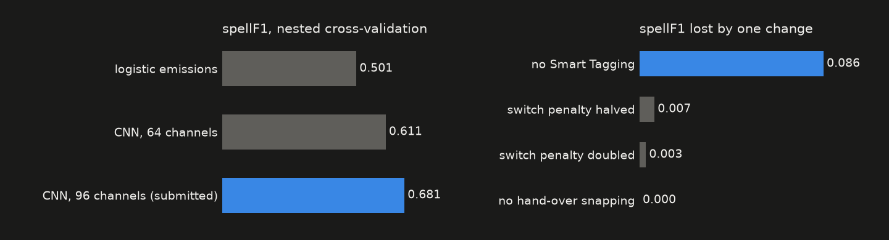

More than a Hack 2027 · Phase 1
Our model watches automatic tracking data and calls possession 25 times a second: home, away, or dead ball. Below it's doing exactly that, live in your browser, on a Bundesliga match it has never seen. Drag the timeline, switch cameras, take the ball away from it.
The first ten minutes of one external match (IDSSE / DFL, CC BY 4.0), scored by a version of the network that never saw it. Players come from the clean tracking; the ball and the model's calls come from the degraded version you pick, which is what the model actually had to work with. This match is one of the easier ones in our benchmark: the average over all 27 matches is 0.703 with the same settings and 0.681 in the stricter nested estimate.
"Whoever's closest has it" works for about ten seconds. Then the ball goes missing, a long pass hangs in the air near nobody, a defender pokes it without winning it, or play stops for a throw-in with everyone still standing around. And the scoring metric punishes flicker hard: a possession that jumps to the other team for half a second turns one right answer into three wrong ones.
So we never make the call frame by frame. We gather evidence for every frame, then pick the most believable story for the whole half, paying a fee every time possession switches.
Distances, who touched it last and who touches it next, team shape, players walking like the whistle just went, ball over the line, tactical tags.
A small 1-D CNN looks twenty seconds either way and turns the clues into P(home), P(away), P(dead) for every frame.
A Viterbi decoder finds the best sequence for the half. The switching fee is what stops the flicker.
Each change of possession moves to the first touch of the team taking over. That's when it really happened.

The competition match is FC Barcelona vs Athletic Club, and the rules say no tuning on it, so we didn't. The network learned from 7 Bundesliga matches (IDSSE) and 20 A-League matches (SkillCorner) with their tracking deliberately wrecked to look like automatic tracking: the ball deleted in chunks, positions jittered, player IDs swapped. We locked every parameter, pushed the commit, and only then scored the public five minutes, once.
Honest weak spot: we merge short possessions. Splitting them more would look nicer on the public clip and score worse on the 27 matches we can actually measure, so we left it. It's all in the technical document.